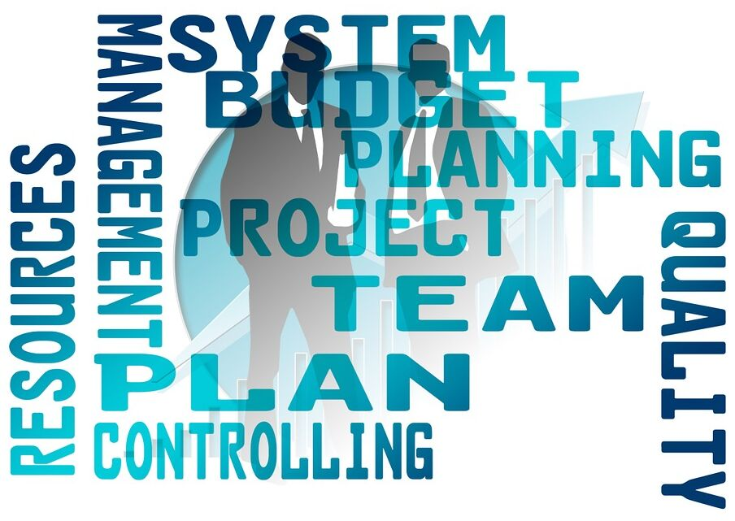
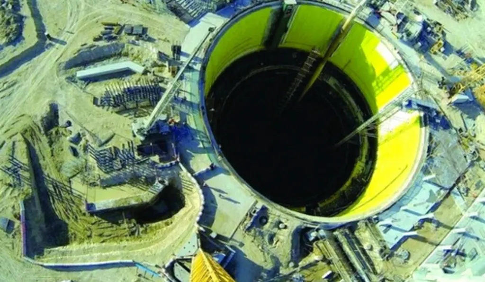

Services.
Project management for clients, contractors and engineering offices, over the entire life cycle of a project.
01
Project Life Cycle Management
MBecker Engineering has many years of experience in the preparation and execution of large-scale, interdisciplinary projects. Drawing on this experience, MBecker Engineering is competent to perform project management tasks as Freelance Consultant for Clients, Contractors and Engineering Offices. In order to cover project planning and design, MBecker Engineering works together with national and international competent Engineering Offices.
The efficiency and quality of project execution is increased significantly by streamlining management responsibilities. MBecker Engineering has construction and site management experience in nearly all fields of civil engineering and masters both national and international construction standards in order to manage projects in a state-of-the-art manner related to cost, time and quality.

02
Project Development
Many innovations enter the market: an abundance of ideas perish on the drawing board. Project development aims at turning promising innovation ideas into feasible project concepts. MBecker Engineering facilitates project development, but also adds creativity and provides direction in all development stages. MBecker Engineering supports and co-develops your idea into a valuable project, process and product.
MBecker Engineering proposes a general approach to project development that can be customised depending on the situation and demand.

03
Construction Management from Project Start to Acceptance
One of the key objectives of any project is always having a balance among the triple constraints: time, cost and quality. The better the balance, the better the chances of the project being successful. MBecker Engineering project management ensures the highest level of investment protection and smooth running of projects from construction start to operation until acceptance and commissioning.
MBecker Engineering is able to deliver the entire Project Management life cycle to ensure clients’ goals.
MBecker Engineering works with the project management software BauMaster® for project execution.

